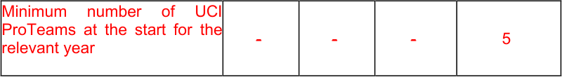

MEMORANDUM
01.07.2025
PART II - ROAD RACES
Rules amendments applying on 20.10.2025
Chapter I CALENDAR AND PARTICIPATION
2.1.005 International races and participation
| International Calendar |
Category of event |
Class | Participation |
|---|---|---|---|
| Olympic games | ME WE |
JO | - As per part XI |
| World championships |
ME WE MU WU MJ WJ |
CM | - National teams, in accordance with the world championships (see part IX) |
| Continental championships |
ME WE MU WU MJ WJ |
CC | - National teams, in accordance with the continental championships (see part X) |
| Continental games | Continental games | JC | - National teams, in accordance with the specific regulations of the event |
| Regional games | Regional games | JR | - National teams, in accordance with the regional games (see part X) |
| UCI WorldTour | ME | 1.UWT 2.UWT |
- UCI WorldTeams (see Art. 2.15.127) - Invited UCI ProTeams - National team of the organising country in events determined by the PCC |
| UCI Europe Tour | ME MU |
1.Pro 2.Pro |
- UCI WorldTeams (max~~70%~~72%) - UCI ProTeams - UCI continental teams of the country (1) - UCI cyclo-cross professional teams of the country(1) - Foreign UCI continental teams (max. 2)(1) - National team of the country of the organiser |
| UCI Europe Tour | ME MU |
1.1 2.1 |
- UCI WorldTeams (max 50%) - UCI ProTeams - UCI continental teams - UCI cyclo-cross professional teams - National teams |
MEMORANDUM
01.07.2025
| International Calendar |
Category of event |
Class | Participation |
|---|---|---|---|
| 1.2 2.2 |
- UCI ProTeams of the country - UCI foreign UCI ProTeams (max. 2) - UCI continental teams - UCI cyclo-cross professional teams - National teams - Regional and club teams |
||
| MU | Ncup 1.2 Ncup 2.2 |
- National teams - Regional and club teams (max 16%) (2) - Mixed teams |
|
| UCI America Tour UCI Asia Tour UCI Oceania Tour UCI Africa Tour |
ME | 1.Pro 2.Pro |
- UCI WorldTeams (max~~65%~~72%) - UCI ProTeams - UCI continental teams(1) - UCI cyclo-cross professional teams (1) - National teams |
| UCI America Tour UCI Asia Tour UCI Oceania Tour UCI Africa Tour |
ME | 1.1 2.1 |
- UCI WorldTeams (max 50%) - UCI ProTeams - UCI continental teams - UCI cyclo-cross professional teams - National teams |
| UCI America Tour UCI Asia Tour UCI Oceania Tour UCI Africa Tour |
ME | 1.2 2.2 |
- UCI ProTeams - UCI continental teams - UCI cyclo-cross professional teams - National teams - Regional and club teams - African mixed teams (3) |
| UCI America Tour UCI Asia Tour UCI Oceania Tour UCI Africa Tour |
MU | 1.2 2.2 |
- UCI ProTeams of the country - UCI continental teams - UCI cyclo-cross professional teams - National teams - Regional and club teams - Mixed teams |
| UCI America Tour UCI Asia Tour UCI Oceania Tour UCI Africa Tour |
MU | Ncup 1.2 Ncup 2.2 |
- National teams - Regional and club teams (max 16%) (2) - Mixed teams |
| Women Elite | WE | 1.WWT 2.WWT |
- UCI Women’s WorldTeams (min 8) - UCI Women’s ProTeams ~~- UCI women’s continental teams~~ ~~- UCI cyclo-cross professional teams~~ - National team from the country of the organiser with the agreement of the UCI - (4) |
MEMORANDUM
01.07.2025
| International Calendar |
Category of event |
Class | Participation |
|---|---|---|---|
| 1.Pro 2.Pro |
- UCI Women’s WorldTeams (min 4) - UCI Women’s ProTeams - UCI women’s continental teams - UCI cyclo-cross professional teams ~~- ~~National teams ~~- Regional and club teams from the~~ ~~country of the organiser (max 2) ~~ |
||
| 1.1 2.1 |
- UCI Women’s WorldTeams (min 1, max 7) - UCI Women’s ProTeams - UCI women’s continental teams - UCI cyclo-cross professional teams - National teams - Regional and club teams |
||
| WE WU |
1.2 2.2 |
- UCI Women’s ProTeams - UCI women’s continental teams - UCI cyclo-cross professional teams - National teams(5) - Regional and club teams(5) - Mixed teams(5) |
|
| Men Junior | MJ | 1.Ncup 2.Ncup |
- National teams - Regional and club teams (max 16%) (2) - Mixed teams |
| Men Junior | MJ | 1.1 2.1 |
- National teams - Regional and club teams - Mixed teams |
| Women Junior | WJ | 1.Ncup 2.Ncup |
- National teams - Regional and club teams - Mixed teams |
| Women Junior | WJ | 1.1 2.1 |
- National teams - Regional and club teams - Mixed teams WJ 1 |
(1) In order to compete in a UCI ProSeries event, UCI Continental Teams and UCI cyclo- cross professional teams must contribute to the programme for the fight against doping related to UCI ProSeries events as provided in the Financial Obligations published on the UCI website; the teams concerned will be included in a list published on the UCI website. (2) Only regional and club teams from the country of the organiser or border country and only if the national team of the country of the regional or club team is also taking part in the event. (3) only for UCI Africa Tour. (4) If thirty days prior to the event, the number of confirmed teams remains below the minimum required, and subject to the organiser providing evidence to the UCI that all UCI Women’s WorldTeams and UCI Women’s ProTeams have been duly invited to participate in the event, the UCI may authorise the organiser, as a first step, to invite UCI Women’s Continental Teams registered in the host country, and as a second step, to invite any other UCI Women’s Continental Teams.. (5) Women of the second year of Junior may be included in these teams, provided they have authorisation from the National Federation that issued their license.
In order to compete in a UCI WorldTour race, riders must have submitted accurate and up-to-date whereabouts information to an anti-doping organisation
MEMORANDUM
01.07.2025
for a minimum period of 6 weeks and have been subject to testing in accordance with the athlete biological passport programme as implemented by the UCI.
(text modified on 1.01.99; 1.01.05; 1.01.06; 1.10.06; 25.09.07; 1.01.08; 1.1.09; 1.07.09; 1.10.09; 1.10.10; 1.07.11; 1.07.12; 1.10.13; 1.01.14; 1.01.15; 1.01.16; 12.01.17; 1.02.17; 1.01.18; 23.10.19; 1.01.20; 9.11.20; 1.01.24 ; 1.07.24,1.01.25; 20.10.25).
2.1.007 Obligatory invitations to events on the international calendar bis Provisions for Grand Tours and UCI WorldTour stage races The organiser must invite the best UCI ProTeams on the UCI World Team Ranking, as considered on the last day of the previous season (under the terms of article 2.1.001) [ (1)], according to the followings:
| Number of UCI WorldTeams |
Obligatory Invitation of best UCI ProTeams (2) |
Remaining wild cards for Organisers |
Col4 |
|---|---|---|---|
| **Grands Tours (3) (4) ** | Other stage races | ||
| 18 | ~~2 ~~3 | ~~3~~ 2 | ~~5 ~~4 |
| 17 | ~~3 ~~4 | ~~3~~ 2 | ~~5 ~~4 |
| 16 | ~~3 ~~4 | ~~4~~ 3 | ~~6 ~~5 |
(1) For the purpose of this article, teams registered as UCI ProTeam or UCI WorldTeam during the previous season are taken into consideration.
(2) As a matter of exception to article 1.2.049, the UCI ProTeam shall confirm its participation or not to the organiser at the latest 70 days before the event. In the UCI ProTeam declines the invitation or fails to confirm its participation within the aforementioned deadline the organiser may issue an additional wild card. (3) The organiser of a Grand Tour must guarantee the participation in the race of at least one UCI WorldTeam or UCI ProTeam from the country of the organiser amongst the 22 participating teams.
(4) For the 2024 season, only the 50 best-ranked teams on the UCI World ranking by teams of the 2023 season shall be entitled to receive a “wild-card” invitation from a Grand Tour organiser. For the 2025 season, only the 40 best-ranked teams on the UCI World ranking by teams of the 2024 season shall be entitled to receive a “wild-card” invitation from a Grand Tour organiser. From the 2026 season onwards, only the 30 best ranked teams on the UCI World ranking by teams of the previous season shall be entitled to receive a “wild-card” invitation from a Grand Tour organiser.
UCI ProTeams registered for the first time as UCI ProTeams will be considered based on the addition of the points scored at the end of the previous season by their 20 best riders, according to the list of riders published on the UCI website following the confirmation by the UCI of the registration of the team.
UCI ProTeams that accept the obligatory invitation from the organiser (except wild card) to participate in at least one Grand Tour, shall pay the same contribution to the biological passport as UCI WorldTeams, as published in the International Testing Agency (ITA) financial obligations document available on the UCI website.
MEMORANDUM
01.07.2025
Provisions for UCI WorldTour one-day races The organiser must invite the best UCI ProTeams on the UCI World Team Ranking, as considered on the last day of the previous season (under the terms of article 2.1.001) [ (1)], according to the followings:
| Number of UCI WorldTeams |
Obligatory Invitation of best UCI ProTeams(2) (3) |
Remaining wild cards for Organisers(3) |
|---|---|---|
| 18 | 3 | 4 |
| 17 | 4 | 4 |
| 16 | 4 | 5 |
(1) For the purpose of this article, teams registered as UCI ProTeam or UCI WorldTeam during the previous season are taken into consideration. (2) Invitations declined by invited UCI ProTeams may be used by the organiser as additional wild cards.
Provisions for UCI Women’s WorldTour events The organiser must send an invitation to all UCI Women's WorldTeams and to the two best UCI Women's ProTeams in the UCI World Team Ranking, as at the last day of the previous season (within the meaning of article 2.1.001) [ (1)], in accordance with the following provisions.
In the event that the number of UCI Women's WorldTeams is less than 13, the number of obligatory invitations to the UCI Women’s ProTeam, based on the abovementioned ranking, shall be increased accordingly in order to ensure a minimum number of 15 invitations to the UCI WorldTeams and UCI Women’s ProTeam.
Provisions for ME and MU class2 events of the Europe Tour as well as ME and MU class 1 and class 2 events of the America Tour, Asia Tour and Oceania Tour The organiser must invite the first 3 UCI continental teams in the classification by team for the relevant continental circuit of the event, on the last day of the previous season (in the sense of Article 2.1.001). For the application of this provision, only teams from the relevant continental circuit of which the event is part and, amongst these, only the best team of each nation is considered.
Provisions for ME and MU class 1 and class 2 events of the Africa Tour The organiser must invite the first 3 national teams in the classification by nation for the UCI Africa Tour, on the last day of the previous season (in the sense of Article 2.1.001).
The organiser must accept entries from above mentioned teams who have responded positively to an invitation.
(text modified on 1.01.06; 1.01.07; 1.10.10; 1.02.11; 1.07.11; 1.07.12; 1.10.13; 1.01.15; 1.01.17; 25.10.17; 22.10.18; 23.10.19; 11.02.20; 12.06.20; 8.02.21, 1.11.21, 1.01.23, 1.03.23; 1.01.24; 1.07.24, 1.04.25; 20.10.25).
MEMORANDUM
01.07.2025
Chapter X UCI RANKINGS
§ 1 Elite and Under 23 Men’s UCI World Ranking
Scale of points 2.10.008 General provisions
The awarding of points for stage races is in accordance with article 2.6.001 regarding the duration of the event. For team time trial events and stages the points on the scale shall be awarded to the team. These points shall be divided equally between the riders finishing the event or the stage. Calculations shall be rounded to a hundredth of a point.
Final results in UCI WorldTour events
| Position | Tour de Fran ce |
Giro d'Italia, La Vuelta Ciclista a España |
Milano-San Remo, Ronde van Vlaanderen -Tour des Flandres, Paris- Roubaix, Liège- Bastogne- Liège, Il Lombardia |
Santos Tour Down Under, UAE Tour, Strade Bianche, Paris - Nice, Tirreno - Adriatico, Gent – Wevelgem in Flanders Fields, Amstel Gold Race, La Flèche Wallonne, Critérium du Dauphiné, Tour de Romandie, Tour de Suisse, Grand Prix Cycliste de Québec, Grand Prix Cycliste de Montréal |
Cadel Evans Great Ocean Road Race, Omloop Het Nieuwsblad Elite, Volta Ciclista a Catalunya, Classic Brugge - De Panne, E3 Saxo Bank Classic, Dwars door Vlaanderen - A travers la Flandres, Itzulia Basque Country, Eschborn- Frankfurt, Copenhagen Sprint, Donostia San Sebastian Klasikoa, Tour de Pologne, Renewi Tour, BEMER Cyclassics, Bretagne Classic – Ouest- France, Gree – Tour of Guangxi, |
|---|---|---|---|---|---|
| **1 ** | 1300 | 1100 | 800 | 500 | 400 |
| **2 ** | 1040 | 885 | 640 | 400 | 320 |
| **3 ** | 880 | 750 | 520 | 325 | 260 |
| **4 ** | 750 | 600 | 440 | 275 | 220 |
| **5 ** | 620 | 495 | 360 | 225 | 180 |
| **6 ** | 520 | 415 | 280 | 175 | 140 |
| **7 ** | 425 | 340 | 240 | 150 | 120 |
| **8 ** | 360 | 285 | 200 | 125 | 100 |
| **9 ** | 295 | 235 | 160 | 100 | 80 |
| 10 | 230 | 180 | 135 | 85 | 68 |
| 11 | 190 | 155 | 110 | 70 | 56 |
| 12 | 165 | 130 | 95 | 60 | 48 |
| 13 | 140 | 110 | 85 | 50 | 40 |
| 14 | 110 | 90 | 65 | 40 | 32 |
| 15 | 100 | 80 | 55 | 35 | 28 |
| 16 | 90 | 75 | 50 | 30 | 24 |
| 17 | 85 | 70 | 50 | 30 | 24 |
| 18 | 80 | 60 | 50 | 30 | 24 |
| 19 | 70 | 55 | 50 | 30 | 24 |
| 20 | 60 | 50 | 50 | 30 | 24 |
MEMORANDUM
01.07.2025
| Position | Tour de Fran ce |
Giro d'Italia, La Vuelta Ciclista a España |
Milano-San Remo, Ronde van Vlaanderen -Tour des Flandres, Paris- Roubaix, Liège- Bastogne- Liège, Il Lombardia |
Santos Tour Down Under, UAE Tour, Strade Bianche, Paris - Nice, Tirreno - Adriatico, Gent – Wevelgem in Flanders Fields, Amstel Gold Race, La Flèche Wallonne, Critérium du Dauphiné, Tour de Romandie, Tour de Suisse, Grand Prix Cycliste de Québec, Grand Prix Cycliste de Montréal |
Cadel Evans Great Ocean Road Race, Omloop Het Nieuwsblad Elite, Volta Ciclista a Catalunya, Classic Brugge - De Panne, E3 Saxo Bank Classic, Dwars door Vlaanderen - A travers la Flandres, Itzulia Basque Country, Eschborn- Frankfurt, Copenhagen Sprint, Donostia San Sebastian Klasikoa, Tour de Pologne, Renewi Tour, BEMER Cyclassics, Bretagne Classic – Ouest- France, Gree – Tour of Guangxi, |
|---|---|---|---|---|---|
| 21 | 50 | 50 | 30 | 20 | 16 |
| 22 | 50 | 50 | 30 | 20 | 16 |
| 23 | 50 | 50 | 30 | 20 | 16 |
| 24 | 50 | 50 | 30 | 20 | 16 |
| 25 | 50 | 50 | 30 | 20 | 16 |
| 26 | 40 | 30 | 30 | 20 | 16 |
| 27 | 40 | 30 | 30 | 20 | 16 |
| 28 | 40 | 30 | 30 | 20 | 16 |
| 29 | 40 | 30 | 30 | 20 | 16 |
| 30 | 40 | 30 | 30 | 20 | 16 |
| 31 | 35 | 25 | 15 | 10 | 8 |
| 32 | 35 | 25 | 15 | 10 | 8 |
| 33 | 35 | 25 | 15 | 10 | 8 |
| 34 | 35 | 25 | 15 | 10 | 8 |
| 35 | 35 | 25 | 15 | 10 | 8 |
| 36 | 35 | 25 | 15 | 10 | 8 |
| 37 | 35 | 25 | 15 | 10 | 8 |
| 38 | 35 | 25 | 15 | 10 | 8 |
| 39 | 35 | 25 | 15 | 10 | 8 |
| 40 | 35 | 25 | 15 | 10 | 8 |
| 41 | 25 | 20 | 15 | 10 | 8 |
| 42 | 25 | 20 | 15 | 10 | 8 |
| 43 | 25 | 20 | 15 | 10 | 8 |
| 44 | 25 | 20 | 15 | 10 | 8 |
| 45 | 25 | 20 | 15 | 10 | 8 |
| 46 | 25 | 20 | 15 | 10 | 8 |
| 47 | 25 | 20 | 15 | 10 | 8 |
| 48 | 25 | 20 | 15 | 10 | 8 |
| 49 | 25 | 20 | 15 | 10 | 8 |
| 50 | 25 | 20 | 15 | 10 | 8 |
| 51 | 20 | 15 | 10 | 5 | 4 |
| 52 | 20 | 15 | 10 | 5 | 4 |
| 53 | 20 | 15 | 10 | 5 | 4 |
MEMORANDUM
01.07.2025
| Position | Tour de Fran ce |
Giro d'Italia, La Vuelta Ciclista a España |
Milano-San Remo, Ronde van Vlaanderen -Tour des Flandres, Paris- Roubaix, Liège- Bastogne- Liège, Il Lombardia |
Santos Tour Down Under, UAE Tour, Strade Bianche, Paris - Nice, Tirreno - Adriatico, Gent – Wevelgem in Flanders Fields, Amstel Gold Race, La Flèche Wallonne, Critérium du Dauphiné, Tour de Romandie, Tour de Suisse, Grand Prix Cycliste de Québec, Grand Prix Cycliste de Montréal |
Cadel Evans Great Ocean Road Race, Omloop Het Nieuwsblad Elite, Volta Ciclista a Catalunya, Classic Brugge - De Panne, E3 Saxo Bank Classic, Dwars door Vlaanderen - A travers la Flandres, Itzulia Basque Country, Eschborn- Frankfurt, Copenhagen Sprint, Donostia San Sebastian Klasikoa, Tour de Pologne, Renewi Tour, BEMER Cyclassics, Bretagne Classic – Ouest- France, Gree – Tour of Guangxi, |
|---|---|---|---|---|---|
| 54 | 20 | 15 | 10 | 5 | 4 |
| 55 | 20 | 15 | 10 | 5 | 4 |
| 56 | 15 | 10 | 5 | 3 | 2 |
| 57 | 15 | 10 | 5 | 3 | 2 |
| 58 | 15 | 10 | 5 | 3 | 2 |
| 59 | 15 | 10 | 5 | 3 | 2 |
| 60 | 15 | 10 | 5 | 3 | 2 |
Results in prologue and stages in UCI WorldTour events
| Position | Tour de France |
Giro d'Italia, La Vuelta Ciclista a España |
Santos Tour Down Under, UAE Tour, Paris - Nice, Tirreno - Adriatico, Tour de Romandie, Critérium du Dauphiné, Tour de Suisse |
Volta Ciclista a Catalunya, Itzulia Basque Country, Tour de Pologne, Renewi Tour, Tour of Guangxi |
UAE Tour, Tour of Guangxi |
|---|---|---|---|---|---|
| **1 ** | 210 | 180 | 60 | 50 | ~~40~~ |
| **2 ** | 150 | 130 | 40 | 30 | ~~25~~ |
| **3 ** | 110 | 95 | 30 | 25 | ~~20~~ |
| **4 ** | 90 | 80 | 25 | 20 | ~~15~~ |
| **5 ** | 70 | 60 | 20 | 15 | ~~10~~ |
| **6 ** | 55 | 45 | 15 | 10 | ~~8 ~~ |
| **7 ** | 45 | 40 | 10 | 8 | ~~6 ~~ |
| **8 ** | 40 | 35 | 8 | 6 | ~~3 ~~ |
| **9 ** | 35 | 30 | 5 | 3 | ~~2 ~~ |
| 10 | 30 | 25 | 2 | 1 | ~~1 ~~ |
| 11 | 25 | 20 | |||
| 12 | 20 | 15 | |||
| 13 | 15 | 10 |
MEMORANDUM
01.07.2025
| 14 | 10 | 5 | Col4 | Col5 | Col6 |
|---|---|---|---|---|---|
| 15 | 5 | 2 |
Final position in Grand Tours secondary classifications (points and mountains classifications)
| Position | Tour de France |
Giro d'Italia, La Vuelta Ciclista a España |
|---|---|---|
| **1 ** | 210 | 180 |
| **2 ** | 150 | 130 |
| **3 ** | 110 | 95 |
Wearing the race leader’s jersey in a UCI WorldTour event (per stage)
| Position | Tour de France |
Giro d'Italia, La Vuelta Ciclista a España |
Santos Tour Down Under, UAE Tour, Paris - Nice, Tirreno - Adriatico, Tour de Romandie, Critérium du Dauphiné, Tour de Suisse |
Volta Ciclista a Catalunya, Itzulia Basque Country, Tour de Pologne, Renewi Tour, Tour of Guangxi |
UAE Tour, Tour of Guangxi |
|---|---|---|---|---|---|
| **1 ** | 25 | 20 | 10 | 8 | ~~6 ~~ |
Final results in continental calendar events
| Position | UCI ProSeries | Class 1 | Class 2 | 1.2U et 2.2U |
Ncup Tour de l’Avenir |
Ncup |
|---|---|---|---|---|---|---|
| **1 ** | ~~200 2~~50 | 125 | 40 | 30 | 140 | 70 |
| **2 ** | ~~150 1~~70 | 85 | 30 | 25 | 110 | 55 |
| **3 ** | ~~125 1~~40 | 70 | 25 | 20 | 80 | 40 |
| **4 ** | ~~100~~120 | 60 | 20 | 15 | 60 | 30 |
| **5 ** | ~~85 1~~00 | 50 | 15 | 10 | 50 | 25 |
| **6 ** | ~~70~~80 | 40 | 10 | 5 | 40 | 20 |
| **7 ** | ~~60~~70 | 35 | 5 | 3 | 30 | 15 |
| **8 ** | ~~50~~60 | 30 | 3 | 1 | 20 | 10 |
| **9 ** | ~~40~~50 | 25 | 3 | 1 | 10 | 5 |
| 10 | ~~35~~40 | 20 | 3 |
1 | 6 | 3 |
| 11 | 30 | 15 | 3 | |||
| 12 | ~~25 2~~0 | 10 | 3 | |||
| 13 | ~~20~~10 | 5 | 3 | |||
| 14 | ~~15~~10 | 5 | 3 | |||
| 15 | ~~10~~10 | 5 | 3 | |||
| 16 | ~~5~~ 6 | 3 | 1 | |||
| 17 | ~~5~~ 6 | 3 | 1 | |||
| 18 | ~~5~~ 6 | 3 | 1 | |||
| 19 | ~~5 6~~ | 3 | 1 | |||
| 20 | ~~5~~ 6 | 3 | 1 |
MEMORANDUM
01.07.2025
| Position | UCI ProSeries | Class 1 | Class 2 | 1.2U et 2.2U |
Ncup Tour de l’Avenir |
Ncup |
|---|---|---|---|---|---|---|
| 21 | ~~5~~ 6 | 3 | ||||
| 22 | ~~5~~ 6 | 3 | ||||
| 23 | ~~5 6~~ | 3 | ||||
| 24 | ~~5~~ 6 | 3 | ||||
| 25 | ~~5 6~~ | 3 | ||||
| 26 | 5 | |||||
| 27 | 5 | |||||
| 28 | 5 | |||||
| 29 | 5 | |||||
| 30 | 5 | |||||
| 31 | 3 | |||||
| 32 | 3 | |||||
| 33 | 3 | |||||
| 34 | 3 | |||||
| 35 | 3 | |||||
| 36 | 3 | |||||
| 37 | 3 | |||||
| 38 | 3 | |||||
| 39 | 3 | |||||
| 40 | 3 |
Prologue, stages and half-stages in continental calendar events
| Position | UCI ProSeri es |
Class 1 | Class 2 | 2.2U | Ncup Tour de l’Avenir |
Ncup |
|---|---|---|---|---|---|---|
| **1 ** | ~~20~~25 | 14 | 7 | 5 | 15 | 12 |
| **2 ** | 15 | 5 | 3 | 1 | 9 | 8 |
| **3 ** | 10 | 3 | 1 | 5 | 4 | |
| **4 ** | 5 | |||||
| **5 ** | 3 |
Wearing the race leader’s jersey in a continental calendar event (per
| stage) | Col2 | Col3 | Col4 | Col5 | Col6 | Col7 |
|---|---|---|---|---|---|---|
| Positi on |
UCI ProSer ies |
Class 1 | Class 2 | 2.2U | Ncup Tour de l’Avenir |
Ncup |
| **1 ** | 5 | 3 | 1 | 1 | 2 | 1 |
Final results of national championships
| Position | Men Elite | Col3 | Col4 | Col5 | Men Under 23 | Col7 |
|---|---|---|---|---|---|---|
| Road Race A* |
Road Race B* |
Ind. Time Trial A* |
Ind. Time Trial B* |
Road Race |
Ind. Time Trial |
|
| **1 ** | 100 | 50 | 50 | 25 | 50 | 25 |
| **2 ** | 75 | 30 | 30 | 15 | 30 | 15 |
| **3 ** | 60 | 20 | 20 | 10 | 20 | 10 |
| **4 ** | 50 | 15 | 15 | 5 | 15 | 5 |
| **5 ** | 40 | 10 | 10 | 3 | 10 | 3 |
MEMORANDUM
01.07.2025
| Position | Men Elite | Col3 | Col4 | Col5 | Men Under 23 | Col7 |
|---|---|---|---|---|---|---|
| Road Race A* |
Road Race B* |
Ind. Time Trial A* |
Ind. Time Trial B* |
Road Race |
Ind. Time Trial |
|
| **6 ** | 30 | 5 | 5 | 5 | ||
| **7 ** | 20 | 3 | 3 | 3 | ||
| **8 ** | 10 | 3 | 3 | 3 | ||
| **9 ** | 5 | 1 | 1 | 1 | ||
| 10 | 3 | 1 | 1 | 1 | ||
| 11 | 3 | |||||
| 12 | 1 | |||||
| 13 | 1 | |||||
| 14 | 1 | |||||
| 15 | 1 |
* Category A corresponds to the Men Elite national championships of nations that had at least one rider starting the road race of the Men Elite UCI Road world championships in the previous season. Category B corresponds to the Men Elite national championships of all nations not included in Category A.
Where Elite and Men Under 23 compete in their national championships in the same event, points shall be awarded according to their position in the event classification according to the Men Elite points scale.
When two or three nations are organising joint National Championships, results will be however considered distinctively.
Final results of continental championships and continental games*
| Position | Men Elite | Col3 | Men Under 23 | Col5 |
|---|---|---|---|---|
| Road Race | Ind. Time Trial | Road Race | Ind. Time Trial | |
| **1 ** | 250 | 70 | 125 | 50 |
| **2 ** | 200 | 55 | 85 | 30 |
| **3 ** | 150 | 40 | 70 | 20 |
| **4 ** | 125 | 30 | 60 | 15 |
| **5 ** | 100 | 25 | 50 | 10 |
| **6 ** | 90 | 20 | 40 | 5 |
| **7 ** | 80 | 15 | 35 | 3 |
| **8 ** | 70 | 10 | 30 | 3 |
| **9 ** | 60 | 5 | 25 | 1 |
| 10 | 50 | 3 |
20 | 1 |
| 11 | 40 | 15 | ||
| 12 | 35 | 10 | ||
| 13 | 30 | 5 | ||
| 14 | 25 | 5 | ||
| 15 | 20 | 5 | ||
| 16 | 15 | 3 | ||
| 17 | 10 | 3 | ||
| 18 | 5 | 3 | ||
| 19 | 5 | 3 | ||
| 20 | 5 | 3 | ||
| 21 | 5 | |||
| 22 | 5 | |||
| 23 | 5 | |||
| 24 | 5 |
MEMORANDUM
01.07.2025
| Position | Men Elite | Col3 | Men Under 23 | Col5 |
|---|---|---|---|---|
| Road Race | Ind. Time Trial | Road Race | Ind. Time Trial | |
| 25 | 5 | |||
| 26 | 5 | |||
| 27 | 5 | |||
| 28 | 5 | |||
| 29 | 5 | |||
| 30 | 5 | |||
| 31 | 3 | |||
| 32 | 3 | |||
| 33 | 3 | |||
| 34 | 3 | |||
| 35 | 3 | |||
| 36 | 1 | |||
| 37 | 1 | |||
| 38 | 1 | |||
| 39 | 1 | |||
| 40 | 1 |
* The UCI Management Committee will annually determine which continental games will receive points.
Where elite and under 23 men compete in their continental championships in the same event, points shall be awarded according to the elite points scale.
Final results of team time trial Continental Championships
| Position | Men Elite |
|---|---|
| 1 | 70 |
| 2 | 55 |
| 3 | 40 |
| 4 | 30 |
| 5 | 25 |
| 6 | 20 |
| 7 | 15 |
| 8 | 10 |
| 9 | 5 |
| 10 | 3 |
If a continental confederation organises a separate team time trial event for the Men Under 23 category, no UCI points shall be awarded for that event.
Final results of team time trial mixed relay of the Continental Championships
| Position | Men Elite |
|---|---|
| 1 | 70 |
| 2 | 55 |
| 3 | 40 |
| 4 | 30 |
| 5 | 25 |
| 6 | 20 |
| 7 | 15 |
| 8 | 10 |
| 9 | 5 |
| 10 | 3 |
MEMORANDUM
01.07.2025
Points shall be split between finishing male riders based on final mixed relay classification. Calculations shall be rounded to a hundredth of a point.
If a continental confederation organises a separate team time trial event for the Men Under 23 category, no UCI points shall be awarded for that event.
Final results in the Olympic Games and UCI Road World Championships
| Col1 | Olympic Games and World | Col3 | World Championships | Col5 |
|---|---|---|---|---|
| Position | Elite Road | Elite Time Trial | U23 Road | U23 Time Trial |
| **1 ** | 900 | 455 | 200 | 125 |
| **2 ** | 715 | 325 | 150 | 85 |
| **3 ** | 600 | 260 | 125 | 70 |
| **4 ** | 490 | 195 | 100 | 60 |
| **5 ** | 410 | 165 | 85 | 50 |
| **6 ** | 340 | 130 | 70 | 40 |
| **7 ** | 265 | 110 | 60 | 35 |
| **8 ** | 225 | 90 | 50 | 30 |
| **9 ** | 190 | 80 | 40 | 25 |
| 10 | 150 | 65 | 35 | 20 |
| 11 | 130 | 55 | 30 | 15 |
| 12 | 105 | 40 | 25 | 10 |
| 13 | 90 | 30 | 20 | 5 |
| 14 | 75 | 25 | 15 | 5 |
| 15 | 60 | 20 | 10 | 5 |
| 16 | 50 | 15 | 5 | 3 |
| 17 | 45 | 10 | 5 | 3 |
| 18 | 45 | 10 | 5 | 3 |
| 19 | 45 | 5 | 5 | 3 |
| 20 | 45 | 5 | 5 | 3 |
| 21 | 45 | 3 | 5 | |
| 22 | 30 | 3 | 5 | |
| 23 | 30 | 3 | 5 | |
| 24 | 30 | 3 | 5 | |
| 25 | 30 | 3 | 5 | |
| 26 | 30 | 5 | ||
| 27 | 30 | 5 | ||
| 28 | 30 | 5 | ||
| 29 | 30 | 5 | ||
| 30 | 30 | 5 | ||
| 31 | 30 | 3 | ||
| 32 | 15 | 3 | ||
| 33 | 15 | 3 | ||
| 34 | 15 | 3 | ||
| 35 | 15 | 3 | ||
| 36 | 15 | 3 | ||
| 37 | 15 | 3 | ||
| 38 | 15 | 3 | ||
| 39 | 15 | 3 | ||
| 40 | 15 | 3 | ||
| 41 | 15 | |||
| 42 | 15 | |||
| 43 | 15 | |||
| 44 | 15 |
MEMORANDUM
01.07.2025
| Col1 | Olympic Games and World | Col3 | World Championships | Col5 |
|---|---|---|---|---|
| Position | Elite Road | Elite Time Trial | U23 Road | U23 Time Trial |
| 45 | 15 | |||
| 46 | 15 | |||
| 47 | 15 | |||
| 48 | 15 | |||
| 49 | 15 | |||
| 50 | 15 | |||
| 51 | 10 | |||
| 52 | 10 | |||
| 53 | 10 | |||
| 54 | 10 | |||
| 55 | 10 | |||
| 56 | 5 | |||
| 57 | 5 | |||
| 58 | 5 | |||
| 59 | 5 | |||
| 60 | 5 |
Final results in the team time trial mixed relay of the UCI Road World Championships
| Position | Men Elite |
|---|---|
| 1 | 300 |
| 2 | 250 |
| 3 | 200 |
| 4 | 150 |
| 5 | 125 |
| 6 | 100 |
| 7 | 85 |
| 8 | 75 |
| 9 | 60 |
| 10 | 50 |
| 11 | 40 |
| 12 | 30 |
| 13 | 25 |
| 14 | 15 |
| 15 | 10 |
| 16 | 10 |
| 17 | 10 |
| 18 | 10 |
| 19 | 10 |
| 20 | 10 |
| 21 | _5 _ |
| 22 | _5 _ |
| 23 | _5 _ |
| 24 | _5 _ |
| 25 | _5 _ |
Points shall be split between finishing male riders based on final mixed relay classification. Calculations shall be rounded to a hundredth of a point.
(article introduced on 1.01.16; modified on 1.01.17; 25.10.17; 22.10.18; 1.01.19; 23.10.19, 1.01.23; 17.06.24, 20.10.25).
MEMORANDUM
01.07.2025
§ 2 Elite and Under 23 Women’s UCI World Ranking
2.10.017 Points scale Women Elite
General provisions Points awarded for stages shall be recorded on the last day of the event.
The awarding of points for stage races is in accordance with article 2.6.001 regarding the duration of the event.
For team time trial events and stages the points on the scale shall be awarded to the team. These points shall be divided equally between the riders finishing the event or the team time trial stage. Calculations shall be rounded to a hundredth of a point.
Final results in UCI Women’s WorldTour events
| Position | Tour de France Femm e s |
Giro d'Italia Women, Vuelta España Femenin a |
Milano-San Remo, Ronde van Vlaanderen -Tour des Flandres, Paris- Roubaix, Liège- Bastogne- Liege |
Santos Tour Down Under, UAE Tour Women, Strade Bianche Donne, Trofeo Alfredo Binda, Gent – Wevelgem in Flanders Fields, Amstel Gold Race Ladies Edition, La Fleche Wallonne Feminine Tour de Suisse Women, Tour de Romandie Féminin |
Cadel Evans, Oomlop Nieuwsblad, Classic Brugge – De Panne, Dwars door Vlaanderen - A travers la Flandres, Itzulia Women, Vuelta a Burgos Feminas, Tour of Britain Women, Copenhagen Sprint, Classic Lorient Agglomeration Ceratizit, Simac Ladies Tour, Tour of Chongming Island, Tour of Guangxi |
|---|---|---|---|---|---|
| **1 ** | 1300 | 1100 | 800 | 500 | 400 |
| **2 ** | 1040 | 885 | 640 | 400 | 320 |
| **3 ** | 880 | 750 | 520 | 325 | 260 |
| **4 ** | 750 | 600 | 440 | 275 | 220 |
| **5 ** | 620 | 495 | 360 | 225 | 180 |
| **6 ** | 520 | 415 | 280 | 175 | 140 |
| **7 ** | 425 | 340 | 240 | 150 | 120 |
| **8 ** | 360 | 285 | 200 | 125 | 100 |
| **9 ** | 295 | 235 | 160 | 100 | 80 |
MEMORANDUM
01.07.2025
| Position | Tour de France Femm e s |
Giro d'Italia Women, Vuelta España Femenin a |
Milano-San Remo, Ronde van Vlaanderen -Tour des Flandres, Paris- Roubaix, Liège- Bastogne- Liege |
Santos Tour Down Under, UAE Tour Women, Strade Bianche Donne, Trofeo Alfredo Binda, Gent – Wevelgem in Flanders Fields, Amstel Gold Race Ladies Edition, La Fleche Wallonne Feminine Tour de Suisse Women, Tour de Romandie Féminin |
Cadel Evans, Oomlop Nieuwsblad, Classic Brugge – De Panne, Dwars door Vlaanderen - A travers la Flandres, Itzulia Women, Vuelta a Burgos Feminas, Tour of Britain Women, Copenhagen Sprint, Classic Lorient Agglomeration Ceratizit, Simac Ladies Tour, Tour of Chongming Island, Tour of Guangxi |
|---|---|---|---|---|---|
| 10 | 230 | 180 | 135 | 85 | 68 |
| 11 | 190 | 155 | 110 | 70 | 56 |
| 12 | 165 | 130 | 95 | 60 | 48 |
| 13 | 140 | 110 | 85 | 50 | 40 |
| 14 | 110 | 90 | 65 | 40 | 32 |
| 15 | 100 | 80 | 55 | 35 | 28 |
| 16 | 90 | 75 | 50 | 30 | 24 |
| 17 | 85 | 70 | 50 | 30 | 24 |
| 18 | 80 | 60 | 50 | 30 | 24 |
| 19 | 70 | 55 | 50 | 30 | 24 |
| 20 | 60 | 50 | 50 | 30 | 24 |
| 21 | 50 | 50 | 30 | 20 | 16 |
| 22 | 50 | 50 | 30 | 20 | 16 |
| 23 | 50 | 50 | 30 | 20 | 16 |
| 24 | 50 | 50 | 30 | 20 | 16 |
| 25 | 50 | 50 | 30 | 20 | 16 |
| 26 | 40 | 30 | 30 | 20 | 16 |
| 27 | 40 | 30 | 30 | 20 | 16 |
| 28 | 40 | 30 | 30 | 20 | 16 |
| 29 | 40 | 30 | 30 | 20 | 16 |
| 30 | 40 | 30 | 30 | 20 | 16 |
| 31 | 35 | 25 | 15 | 10 | 8 |
| 32 | 35 | 25 | 15 | 10 | 8 |
| 33 | 35 | 25 | 15 | 10 | 8 |
| 34 | 35 | 25 | 15 | 10 | 8 |
| 35 | 35 | 25 | 15 | 10 | 8 |
| 36 | 35 | 25 | 15 | 10 | 8 |
MEMORANDUM
01.07.2025
| Position | Tour de France Femm e s |
Giro d'Italia Women, Vuelta España Femenin a |
Milano-San Remo, Ronde van Vlaanderen -Tour des Flandres, Paris- Roubaix, Liège- Bastogne- Liege |
Santos Tour Down Under, UAE Tour Women, Strade Bianche Donne, Trofeo Alfredo Binda, Gent – Wevelgem in Flanders Fields, Amstel Gold Race Ladies Edition, La Fleche Wallonne Feminine Tour de Suisse Women, Tour de Romandie Féminin |
Cadel Evans, Oomlop Nieuwsblad, Classic Brugge – De Panne, Dwars door Vlaanderen - A travers la Flandres, Itzulia Women, Vuelta a Burgos Feminas, Tour of Britain Women, Copenhagen Sprint, Classic Lorient Agglomeration Ceratizit, Simac Ladies Tour, Tour of Chongming Island, Tour of Guangxi |
|---|---|---|---|---|---|
| 37 | 35 | 25 | 15 | 10 | 8 |
| 38 | 35 | 25 | 15 | 10 | 8 |
| 39 | 35 | 25 | 15 | 10 | 8 |
| 40 | 35 | 25 | 15 | 10 | 8 |
| 41 | 25 | 20 | 15 | 10 | 8 |
| 42 | 25 | 20 | 15 | 10 | 8 |
| 43 | 25 | 20 | 15 | 10 | 8 |
| 44 | 25 | 20 | 15 | 10 | 8 |
| 45 | 25 | 20 | 15 | 10 | 8 |
| 46 | 25 | 20 | 15 | 10 | 8 |
| 47 | 25 | 20 | 15 | 10 | 8 |
| 48 | 25 | 20 | 15 | 10 | 8 |
| 49 | 25 | 20 | 15 | 10 | 8 |
| 50 | 25 | 20 | 15 | 10 | 8 |
| 51 | 20 | 15 | 10 | 5 | 4 |
| 52 | 20 | 15 | 10 | 5 | 4 |
| 53 | 20 | 15 | 10 | 5 | 4 |
| 54 | 20 | 15 | 10 | 5 | 4 |
| 55 | 20 | 15 | 10 | 5 | 4 |
| 56 | 15 | 10 | 5 | 3 | 2 |
| 57 | 15 | 10 | 5 | 3 | 2 |
| 58 | 15 | 10 | 5 | 3 | 2 |
| 59 | 15 | 10 | 5 | 3 | 2 |
| 60 | 15 | 10 | 5 | 3 | 2 |
MEMORANDUM
01.07.2025
Results in prologue and stages in UCI Women’s WorldTour events
| Position | Tour de France Fem mes |
Giro d'Italia Women, Vuelta España Femenina |
Santos Tour Down Under, UAE Tour Women, Tour de Romandie Féminin, Tour de Suisse Women |
Itzulia Women, Vuelta a Burgos Feminas, Tour of Britain Women, Simac Ladies Tour, Tour of Chongming Island |
|---|---|---|---|---|
| **1 ** | 210 | 180 | 60 | 50 |
| **2 ** | 150 | 130 | 40 | 30 |
| **3 ** | 110 | 95 | 30 | 25 |
| **4 ** | 90 | 80 | 25 | 20 |
| **5 ** | 70 | 60 | 20 | 15 |
| **6 ** | 55 | 45 | 15 | 10 |
| **7 ** | 45 | 40 | 10 | 8 |
| **8 ** | 40 | 35 | 8 | 6 |
| **9 ** | 35 | 30 | 5 | 3 |
| 10 | 30 | 25 | 2 | 1 |
| 11 | 25 | 20 | ||
| 12 | 20 | 15 | ||
| 13 | 15 | 10 | ||
| 14 | 10 | 5 | ||
| 15 | 5 | 2 |
Final position in Grand Tours secondary classifications (points and mountains classifications)
| Position | Tour de France Fem mes |
Giro d'Italia Women, Vuelta España Femenina |
|---|---|---|
| **1 ** | 210 | 180 |
| **2 ** | 150 | 130 |
| **3 ** | 110 | 95 |
MEMORANDUM
01.07.2025
~~Wearing the race leader's jersey (per stage)~~
| Position | UCI Women’s WorldTour |
UCI ProSeries | Class 1 | Class 2 |
|---|---|---|---|---|
| ~~Leader~~ | ~~8 ~~ | ~~5 ~~ | ~~3 ~~ | ~~1 ~~ |
Wearing the race leader’s jersey in a UCI Women’s WorldTour event (per
stage)
| Position | Tour de France Fem mes |
Giro d'Italia Women, Vuelta España Femenina |
Santos Tour Down Under, UAE Tour Women, Tour de Romandie Féminin, Tour de Suisse Women |
Itzulia Women, Vuelta a Burgos Feminas, Tour of Britain Women, Simac Ladies Tour, Tour of Chongming Island |
|---|---|---|---|---|
| **1 ** | 25 | 20 | 10 | 8 |
~~One-day events and stage races (final classification)~~ Final results in Continental Calendar Events
| Position | UCI Women’s WorldTour | UCI ProSeries | Class 1 | Class 2 |
|---|---|---|---|---|
| **1 ** | ~~400~~ | ~~200 2~~50 | 125 | 40 |
| **2 ** | ~~320~~ | ~~150 1~~70 | 85 | 30 |
| **3 ** | ~~260~~ | ~~125 1~~40 | 70 | 25 |
| **4 ** | ~~220~~ | ~~100~~120 | 60 | 20 |
| **5 ** | ~~180~~ | ~~85~~100 | 50 | 15 |
| **6 ** | ~~140~~ | 70 80 | 40 | 10 |
| **7 ** | ~~120~~ | ~~60~~70 | 35 | 5 |
| **8 ** | ~~100~~ | ~~50~~60 | 30 | 3 |
| **9 ** | ~~80~~ | ~~40~~50 | 25 | 3 |
| 10 | ~~68~~ | ~~35~~40 | 20 | 3 |
| 11 | ~~56~~ | 30 | 15 | |
| 12 | ~~48~~ | ~~25 20~~ | 10 | |
| 13 | ~~40~~ | ~~20~~10 | 5 | |
| 14 | ~~32~~ | ~~15~~10 | 5 | |
| 15 | ~~28~~ | ~~10~~10 | 5 | |
| 16 | ~~24~~ | ~~5 ~~6 | 3 | |
| 17 | ~~24~~ | ~~5~~6 | 3 | |
| 18 | ~~24~~ | ~~5~~6 | 3 | |
| 19 | ~~24~~ | ~~5 ~~6 | 3 | |
| 20 | ~~24~~ | ~~5 ~~6 | 3 | |
| 21 | ~~16~~ | ~~5 ~~6 | 3 | |
| 22 | ~~16~~ | ~~5 ~~6 | 3 | |
| 23 | ~~16~~ | ~~5 ~~6 | 3 | |
| 24 | ~~16~~ | ~~5 ~~6 | 3 | |
| 25 | ~~16~~ | ~~5 ~~6 | 3 | |
| 26 | ~~16~~ | ~~3 ~~5 |
MEMORANDUM
01.07.2025
| Position | UCI Women’s WorldTour | UCI ProSeries | Class 1 | Class 2 |
|---|---|---|---|---|
| 27 | ~~16~~ | ~~3 ~~5 | ||
| 28 | ~~16~~ | ~~3 ~~5 | ||
| 29 | ~~16~~ | ~~3 ~~5 | ||
| 30 | ~~16~~ | ~~3 ~~5 | ||
| 31 | ~~8 ~~ | 3 | ||
| 32 | ~~8 ~~ | 3 | ||
| 33 | ~~8 ~~ | 3 | ||
| 34 | ~~8 ~~ | 3 | ||
| 35 | ~~8 ~~ | 3 | ||
| 36 | ~~8 ~~ | 3 | ||
| 37 | ~~8 ~~ | 3 | ||
| 38 | ~~8 ~~ | 3 | ||
| 39 | ~~8 ~~ | 3 | ||
| 40 | ~~8 ~~ | 3 |
~~Stages and half-stages~~
| Position | UCI Women’s WorldTour |
UCI ProSeries | Class 1 | Class 2 |
|---|---|---|---|---|
| ~~1 ~~ | ~~50~~ | ~~25~~ | ~~16~~ | ~~8 ~~ |
| ~~2 ~~ | ~~40~~ | ~~20~~ | ~~12~~ | ~~5 ~~ |
| ~~3 ~~ | ~~30~~ | ~~15~~ | ~~8 ~~ | ~~3 ~~ |
| ~~4 ~~ | ~~25~~ | ~~12~~ | ~~6 ~~ | ~~1 ~~ |
| ~~5 ~~ | ~~20~~ | ~~10~~ | ~~5 ~~ | |
| ~~6 ~~ | ~~18~~ | ~~8 ~~ | ~~4 ~~ | |
| ~~7 ~~ | ~~15~~ | ~~6 ~~ | ~~3 ~~ | |
| ~~8 ~~ | ~~10~~ | ~~4 ~~ | ~~2 ~~ | |
| ~~9 ~~ | ~~8~~ | |||
| ~~10~~ | ~~6~~ |
Prologue, stages and half-stages in continental calendar events
| Position | UCI ProSeries | Class 1 | Class 2 | 2.2U |
|---|---|---|---|---|
| **1 ** | 25 | 14 | 7 | 5 |
| **2 ** | 15 | 5 | 3 | 1 |
| **3 ** | 10 | 3 | 1 | |
| **4 ** | 5 | |||
| **5 ** | 3 |
Wearing the race leader’s jersey in a continental calendar events (per stage)
| Positi on |
UCI ProSer ies |
Class 1 | Class 2 | 2.2U |
|---|---|---|---|---|
| **1 ** | 5 | 3 | 1 | 1 |
MEMORANDUM
01.07.2025
Final Results of National Championships
| Col1 | Women Elite | Col3 | Col4 | Col5 | Women Under 23 | Col7 |
|---|---|---|---|---|---|---|
| Position | Road Race A* |
Road Race B* |
Ind. Time Trial A* |
Ind. Time Trial B* |
Road Race |
Ind. Time Trial |
| **1 ** | 100 | 50 | 50 | 25 | 50 | 25 |
| **2 ** | 75 | 30 | 30 | 15 | 30 | 15 |
| **3 ** | 60 | 20 | 20 | 10 | 20 | 10 |
| **4 ** | 50 | 15 | 15 | 5 | 15 | 5 |
| **5 ** | 40 | 10 | 10 | 3 | 10 | 3 |
| **6 ** | 30 | 5 | 5 | 5 | ||
| **7 ** | 20 | 3 | 3 | 3 | ||
| **8 ** | 10 | 3 | 3 | 3 | ||
| **9 ** | 5 | 1 | 1 | 1 | ||
| 10 | 3 | 1 | 1 | 1 | ||
| 11 | 3 | |||||
| 12 | 1 | |||||
| 13 | 1 | |||||
| 14 | 1 | |||||
| 15 | 1 |
* Category A corresponds to the women elite national championships of nations that had at least one rider starting the road race of the women elite UCI Road World Championships in the previous season. Category B corresponds to the women elite national championships of all nations not included in Category A.
Where Elite and Under 23 compete in their national championships in the same event, points shall be awarded according to their position in the event classification according to the Women Elite points scale.
When two or three nations are organising joint National Championships, results will be however considered distinctively.
Final results of Continental championships and continental games*
| Position | Women Elite | Col3 | Women Under 23 | Col5 |
|---|---|---|---|---|
Road Race |
Ind. Time Trial |
Road Race |
Ind. Time Trial |
|
**1 ** |
250 |
70 |
125 |
50 |
**2 ** |
200 |
55 |
85 |
30 |
| **3 ** | 150 | 40 | 70 | 20 |
| **4 ** | 125 | 30 | 60 | 15 |
| **5 ** | 100 | 25 | 50 | 10 |
| **6 ** | 90 | 20 | 40 | 5 |
| **7 ** | 80 | 15 | 35 | 3 |
| **8 ** | 70 | 10 | 30 | 3 |
| **9 ** | 60 | 5 | 25 | 1 |
| 10 | 50 | 3 |
20 | 1 |
| 11 | 40 | 15 | ||
| 12 | 35 | 10 | ||
| 13 | 30 | 5 | ||
| 14 | 25 | 5 | ||
| 15 | 20 | 5 | ||
| 16 | 15 | 3 | ||
| 17 | 10 | 3 | ||
| 18 | 5 | 3 |
MEMORANDUM
01.07.2025
| Position | Women Elite | Col3 | Women Under 23 | Col5 |
|---|---|---|---|---|
Road Race |
Ind. Time Trial |
Road Race |
Ind. Time Trial |
|
19 |
5 |
3 |
||
| 20 | 5 | 3 | ||
| 21 | 5 | |||
| 22 | 5 | |||
| 23 | 5 | |||
| 24 | 5 | |||
| 25 | 5 | |||
| 26 | ~~3 ~~5 | |||
| 27 | ~~3 ~~5 | |||
| 28 | ~~3 ~~5 | |||
| 29 | ~~3 ~~5 | |||
| 30 | ~~3 ~~5 | |||
| 31 | 3 | |||
| 32 | 3 | |||
| 33 | 3 | |||
| 34 | 3 | |||
| 35 | 3 | |||
| 36 | 1 | |||
| 37 | 1 | |||
| 38 | 1 | |||
| 39 | 1 | |||
| 40 | 1 |
* The UCI Management Committee will annually determine which Continental games will receive points.
Where Elite and Under 23 compete in their continental championships or continental game in the same event, points shall be awarded according to the Women Elite points scale.
Final Results in the Olympic games and World Championships
| Col1 | Olympic Games and World | Col3 | World Championships | Col5 |
|---|---|---|---|---|
| Position | Elite Road Race | Elite Time Trial | U23 Road Race |
U23 Individual Time Trial |
| 1 | ~~600~~900 | ~~350~~455 | 200 | 125 |
| 2 | ~~475~~715 | ~~250~~325 | 150 | 85 |
| 3 | ~~400~~600 | ~~200~~260 | 125 | 70 |
| 4 | ~~325~~490 | ~~150~~195 | 100 | 60 |
5 |
~~275~~410 |
~~125~~165 |
85 |
50 |
| 6 | ~~225~~340 | ~~100~~130 | 70 | 40 |
| 7 | ~~175 2~~65 | ~~85~~110 | 60 | 35 |
| 8 | ~~150 2~~25 | ~~70~~ 90 | 50 | 30 |
9 |
~~125 1~~90 |
~~60~~ 80 |
40 |
25 |
| 10 | ~~100~~150 | ~~50~~ 65 | 35 | 20 |
| 11 | ~~85 1~~30 | ~~40~~ 55 | 30 | 15 |
| 12 | ~~70 1~~05 | ~~30~~ 40 | 25 | 10 |
13 |
~~60~~90 |
~~25~~ 30 |
20 |
5 |
14 |
~~50~~75 |
~~20~~ 25 |
15 |
5 |
| 15 | ~~40~~60 | ~~15~~ 20 | 10 | 5 |
| 16 | ~~35~~50 | ~~10~~15 | 5 | 3 |
17 |
~~30~~45 |
~~5 ~~10 |
5 |
3 |
18 |
~~30~~45 |
~~5 ~~10 |
5 |
3 |
MEMORANDUM
01.07.2025
| Col1 | Olympic Games and World | Col3 | World Championships | Col5 |
|---|---|---|---|---|
| Position | Elite Road Race | Elite Time Trial | U23 Road Race |
U23 Individual Time Trial |
| 19 | ~~30~~45 | 5 | 5 | 3 |
| 20 | ~~30~~45 | 5 | 5 | 3 |
| 21 | ~~30~~45 | 3 | 5 | |
22 |
~~20~~30 |
3 |
5 |
|
23 |
~~20~~30 |
3 |
5 |
|
| 24 | ~~20~~30 | 3 | 5 | |
| 25 | ~~20~~30 | 3 | 5 | |
26 |
~~20~~30 |
5 |
||
27 |
~~20~~30 |
5 |
||
| 28 | ~~20~~30 | 5 | ||
| 29 | ~~20~~30 | 5 | ||
30 |
~~20~~30 |
5 |
||
31 |
~~20~~30 |
3 |
||
| 32 | ~~10~~15 | 3 | ||
| 33 | ~~10~~15 | 3 | ||
34 |
~~10~~15 |
3 |
||
35 |
~~10~~15 |
3 |
||
| 36 | ~~10~~15 | 3 | ||
| 37 | ~~10~~15 | 3 | ||
38 |
~~10~~15 |
3 |
||
39 |
~~10~~15 |
3 |
||
| 40 | ~~10~~15 | 3 | ||
| 41 | ~~10~~15 | |||
42 |
~~10~~15 |
|||
43 |
~~10~~15 |
|||
| 44 | ~~10~~15 | |||
| 45 | ~~10~~15 | |||
46 |
~~10~~15 |
|||
47 |
~~10~~15 |
|||
| 48 | ~~10~~15 | |||
| 49 | ~~10~~15 | |||
50 |
~~10~~15 |
|||
51 |
~~5 ~~10 |
|||
| 52 | ~~5 ~~10 | |||
| 53 | ~~5 ~~10 | |||
54 |
~~5 ~~10 |
|||
55 |
~~5 ~~10 |
|||
| 56 | ~~3 ~~5 | |||
| 57 | ~~3 ~~5 | |||
58 |
~~3 ~~5 |
|||
59 |
~~3 ~~5 |
|||
| 60 | ~~3 ~~5 |
Final results of team time trial mixed relay world championships
| Position | Women Elite |
|---|---|
| **1 ** | 300 |
| **2 ** | 250 |
| **3 ** | 200 |
| **4 ** | 150 |
| **5 ** | 125 |
MEMORANDUM
01.07.2025
| Position | Women Elite |
|---|---|
| **6 ** | 100 |
| **7 ** | 85 |
| **8 ** | 75 |
| **9 ** | 60 |
| 10 | 50 |
| 11 | 40 |
| 12 | 30 |
| 13 | 25 |
| 14 | 15 |
| 15 | 10 |
| 16 | 10 |
| 17 | 10 |
| 18 | 10 |
| 19 | 10 |
| 20 | 10 |
| 21 | _5 _ |
| 22 | _5 _ |
| 23 | _5 _ |
| 24 | _5 _ |
| 25 | _5 _ |
The points shall be split between finishing female riders based on final mixed relay classification. Calculations shall be rounded to a hundredth of a point.
(text modified on 1.01.06; 1.01.09; 1.07.12; 1.09.12; 1.10.13; 1.01.15; 1.01.16; 1.01.17; 24.03.17; 25.10.17; 22.10.18; 1.01.19; 23.10.19; 1.01.23; 17.06.24, 20.10.25 ).
Chapter X UCI RANKINGS
(chapter replaced on 1.01.09; modified on 1.01.16).
§ 3 Elite and Under 23 Men’s Continental Rankings (paragraph moved from chapter XI on 1.01.16)
2.10.018 For each continental circuit, there shall be an individual ranking, a ranking by team and a ranking by nations of the elite and under 23 men.
Points earned by Men Under 23 riders registered with a UCI WorldTeam or a UCI ProTeam shall not be counted towards the Under 23 Men’s Continental Ranking. Such provision does not apply to Men under 23 riders registered as trainees with UCI WorldTeams or UCI ProTeams according to articles 2.15.110bis or 2.16.033.
The UCI shall be the exclusive owner of these rankings.
(text modified on 1.01.16; 20.10.25 ).
Chapter XIV UCI CUPS
§ 2 UCI Men Under 23 Nations’ Cup
MEMORANDUM
01.07.2025
(paragraph introduced on 1.01.07).
Participation 2.14.018 The UCI Men Under 23 Nations’ Cup is reserved for men from 19 to 22 years of age.
Men Under 23 riders who are registered with a UCI WorldTeam, or a UCI ProTeam are not authorised to participate in the Nation’s Cup. Such restriction does not apply to Men under 23 riders registered as trainees with UCI WorldTeams or UCI ProTeams according to articles 2.15.110bis or 2.16.033.
(text modified on 1.01.15; 1.01.16; 20.10.25).
§ 3 UCI Men Junior Nations’ Cup (paragraph introduced on 01.01.08).
UCI Men Junior Nations’ Cup ranking 2.14.040 The points for the UCI Men Junior Nations’ Cup count towards ~~are awarded~~
~~only~~ the individual ranking and a ranking by nations which cumulates the ~~by~~ ~~totalling the~~ individual points scored. ~~Only a classification by nations is kept.~~
For team time trial events and stages the points on the scale shall be awarded to the teams.
The awarding of points for stage races is in accordance with article 2.6.001 regarding the duration of the event.
(text modified on 1.01.08; 1.07.11; 1.08.13; 1.01.17; 9.11.20; 20.10.25)
Chapter XVIII MEN ELITE UCI PROSERIES
§ 2 UCI ProSeries calendar
Criteria for drawing up the calendar 2.18.006 The UCI ProSeries calendar is drawn up annually by the UCI Management Committee on the basis of the following criteria that will apply from the 2021 season:
Number of days of racing on the UCI ProSeries calendar There shall not be more than 190 days of racing on the UCI ProSeries calendar.
Number of days of racing per continent The number of days of racing per continent shall not exceed 15% of the total number of days of racing on the continent on the road international calendar (ME and MU events).
A continent of whom the total number of racing days on the UCI ProSeries exceeds the aforementioned limit will not be allowed to register additional events on the UCI ProSeries calendar.
Number of days of racing per country The number of days of racing per country shall not exceed 15% of the total number of days of racing in the country on the road international calendar (ME and MU events) with an absolute maximum of 10 one-day events and 3 stage races.
MEMORANDUM
01.07.2025
A country of whom the total number of racing days on the UCI ProSeries exceeds the aforementioned limit will not be allowed to register additional events on the UCI ProSeries calendar.
Consistency of the calendar A new event shall not be accepted on the calendar if it overlaps with more than three other UCI ProSeries or UCI WorldTour events.
UCI ProSeries events may not be placed on the calendar between the end of the season, as defined by article 2.1.001, and 15 January of the following year.
The UCI Management Committee may decide to exceed the maximum percentage on a case-by-case basis.
(text modified on 20.10.25 ).
Eligibility criteria for events on the UCI ProSeries calendar
2.18.007 The following selection criteria will be taken into account by the UCI
Management Committee when: accepting or refusing an application for registration; withdrawing a registration; submitting a registration to the respect of conditions and/or measures considered appropriate; or reducing the duration of an event:
- the sporting level according to the start lists of the two editions
preceding the application for registration with, as a minimum, the following participation levels:
| Col1 | 2019 | 2020 | 2021 | 2022 2026 and subsequent |
|---|---|---|---|---|
| Events in Europe | ||||
| Minimum number of UCI WorldTeams and UCI ProTeams at the start for the relevant year |
~~10~~ |
~~11~~ | ~~12~~ | 13 |
| Minimum number of UCI WorldTeams at the start for the relevant year |
~~- ~~ |
~~3 ~~ | ~~3~~ | 4 |
| Minimum number of UCI ProTeams at the start for the relevant year |
~~- ~~ |
~~- ~~ | ~~- ~~ | 6 |
| Events outside Europe | ||||
| Minimum number of UCI WorldTeams and UCI ProTeams at the start for the relevant year |
~~6~~ |
~~6 ~~ | ~~8~~ | 10 |
| Minimum number of UCI WorldTeams at the start for the relevant year |
~~- ~~ |
~~- ~~ | ~~1~~ | 3 |

MEMORANDUM
01.07.2025
- the format, structure and nature of the event, contributing to the
image of UCI ProSeries’ elite events; 3. the sporting ambition and coherence of the event within the UCI
ProSeries calendar; 4. the quality of the event's organisation, in particular with regards to
the safety of the riders, race followers and spectators; 5. the technical quality of TV production and observance of the UCI TV
production guide; 6. live international TV coverage of the event in at least ten countries
and live TV coverage of the event in the organiser's country; 7. respect of UCI regulations and other applicable regulations; 8. respect of the organisation guides, specifications or guidelines
published by the UCI; 9. respect of contractual, legal and regulatory obligations; 10. respect of the financial obligations published by the UCI; 11. the absence of attempts to infringe or circumvent obligations; 12. respect of sporting ethics; 13. the absence of any other element liable to harm the image of the UCI
ProSeries, the UCI or cycle sport in general.
The eligibility criteria for submitting an application for registration on the UCI ProSeries calendar are defined above and may be adapted by the UCI Management Committee if necessary.
The UCI Management Committee may also take acknowledged facts into account.
(text modified on 12.06.20, 20.10.25).